Fossas Defeat Capybaras
154-140 in Second Highest Scoring Cork Bowl Ever; Brooks Wilson and Willy
Truitt Co-MVP's; Wilson Catches Career-High 22 Passes and Ties Touchdown
Record with 10; Truitt Goes 62-for-86 with Single-Game Record Tying 22 Touchdowns;
Henney 52-for-89 with 19 Touchdowns in Defeat; Robert Trimble (18 catches)
and Jake Hoalt (17 catches) both Set Career Highs; Greg Howard Becomes All-Time
Tackles Leader
Click Here for Stats
(Click Here
for More Pictures! (thanks
to Joe Trimble and Canon)
Saturday, December 5th - Many uncertainties surrounded Cork Bowl 19
in the days leading up to the game, including the possibility that the two
defenses may actually have an advantage. That was certainly not the case
as the Fossas defeated the Capybaras 154-140 in the second highest scoring
game in history. The 294 points were the most points scored since Cork Bowl
6 when the two teams combined for 315 points. The Fossas were dealt a tough
blow just hours 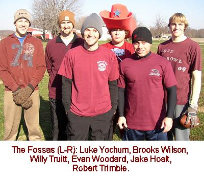 before game time as they found out veteran Josh Williamson
would be unable to make it from Virginia for the game. The news didn't come
in until nearly 9:00 on Friday night. Luke Yochum, a cousin of Fossa player
Evan Woodard, was signed to a one-day contract late Friday night to take
Williamson's place.
A heavy rain on Wednesday left the
field soft and slick, and the temperatures stayed in the low 30's throughout
the game. "It was a little slick and we had some guys go down throughout
the game," stated head groundskeeper Tony Cork. "But all things
considered, it was awfully good conditions to be playing in for early December."
A record-setting crowd took in the action with 23 people in attendance.
Despite a slow start to the game, it turned out to be a record-breaking
day on many levels. Both quarterbacks had career days, and all four Fossas
receivers set career highs in receptions.
It didn't look like an offense-dominated
game early as both teams struggled mightily out of the gates. The Fossas
started with the ball and moved it across midfield before throwing 3 consecutive
incomplete passes to stall the drive and give the Capyabaras an early stop.
However, in what would prove to be a recurring theme throughout the day,
the Capybaras failed to take advantage of the rare turnover on downs. With
only six yards needed for a first down, Henney threw incomplete on three
consecutive passes setting up a 4th and 6. Henney was able to connect with
Kevin Ryan for 8 yards, but it was ruled the pass was thrown after the six-second
time limit and they turned the ball back over to the Fossas without a score.
"I thought we got the play off originally," said quarterback Jeff
Henney. "But after watching the tape, it was still in my hand when
the six-count was up. Like so many things that happened during the game,
it was just enough to cost us."
With nearly 8 minutes already off
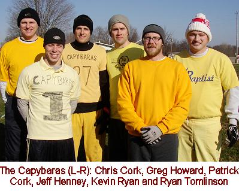 the
clock, neither team had put the ball in the endzone and the quarterbacks
were a combined 2-for-9 throwing the ball. "Both teams looked rusty
coming out of the gates," observed Hall of Fame announcer Tony Cork.
"It looked like it might end up being a low scoring game, but that
was definitely not the case." The Fossas finally put some points on
the board as Willy Truitt connected on back-to-back passes to Brooks Wilson
for a 7-0 advantage. Jeff Henney, making his first ever start at quarterback,
led the Capybaras down the field for a score of their own as he found Greg
Howard in the back of the endzone to tie the score at 7-7. On the next play,
the Fossas looked for a quick strike and Willy Truitt hit Jake Hoalt on
a length-of-the-field bomb to put them up 14-7 (VIDEO). Henney found Patrick Cork for a pair of
long completions and then hit Chris Cork for the game tying score from six
yards out. Robert Trimble scored his first touchdown of the game for the
Fossas on the next drive from 30 yards out to put the Fossas up 21-14 (VIDEO),
but the Capybaras answered with another Greg Howard touchdown to tie the
game at 21 with under f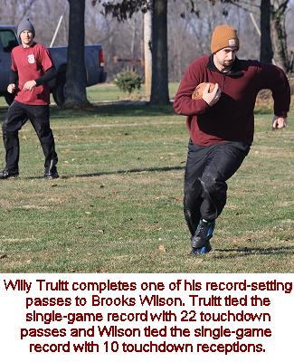 ive minutes to go in the quarter. Back-to-back incompletions
left the Fossas with a 3rd and 20 situation, but Truitt hit Trimble and
Jake Hoalt on the next two plays to extend the drive and then found Wilson
in the endzone for his second score of the quarter to make the game 28-21.
"We had a chance to get another stop on them with 3rd and long and
a 4th down play, but our defense just couldn't make a play," said Capybaras
coach Brian Garrard. The Capybaras were able to answer once again with another
touchdown pass to Greg Howard - his third of the quarter - to end the quarter
with the score tied 28-28.
Despite the slow start, both teams
got rolling as they combined for 8 touchdowns over the final 17 minutes.
After missing on four of his first six passes, Willy Truitt completed 8-of-11
to close the quarter. Truitt was 10-for-17 with 4 touchdowns for the Fossas
while Jeff Henney completed 9-of-18 passes with 4 scores as well. Patrick
Cork led all receivers with 5 catches, while teammate Greg Howard scored
on all 3 of his catches in the quarter. Brooks Wilson led the Fossas with
4 catches, while Robert Trimble and Jake Hoalt each had 3. 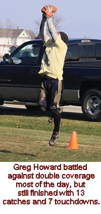
The Fossas quickly moved the ball
deep into enemy territory with a 30 yard completion to Wilson on the first
play of the second quarter, but Willy Truitt's pass intended for Robert
Trimble in the front left corner of the endzone was picked off by Jeff Henney
who made a great one-handed grab for the game's first turnover.(VIDEO) "I
thought I had Robert open, but Henney made a heck of a play," said
Truitt. "After our first drive of the ending on downs, and then a turnover
on the first drive of the second quarter, we were hoping those mistakes
wouldn't end up costing us. There have been plenty of times where 1 or 2
mistakes were enough to lose you a game." The Capybaras looked as if
they would waste another opportunity following the turnover as they threw
three straight incompletions and were faced with a 4th and 16 deep in their
own territory. However, this time Chris Cork made a huge catch and run for
30 yards and Henney found him again on the next play on a jump ball pass
that Cork was able to bring in over Evan Woodard's head in the corner of
the endzone for the Capybaras first lead of the game at 35-28.(VIDEO)
The Fossas moved to a no-huddle offense
on the next drive which would eventually be too much for the Capybaras to
handle. It took just two plays for Truitt to find Wilson for a 32 yard touchdown
grab to tie the game 35-35 (VIDEO),
but Henney found Howard in the endzone for the fourth time of the game to
put the Capybaras back on top 42-35. Trimble scored a short touchdown to
tie the game at 42-42, but Chris Cork answered with a 22-yard score of his
own for a 49-42 Capybaras lead halfway through the quarter. It would be
the last score of the half for the Capybaras. Trimble scored from 12 yards
out to tie the game at 49 apiece and it appeared as if both teams had found
their rhythm. After a first down completion to Ryan Tomlinson, however,
Henney threw three consecutive incompletions setting up a fourth down play.
Henney looked for Howard in the front corner of the endzone, but Willy Truitt
made the first of what would be several huge defensive plays as he was able
to dive in front of the pass and knock it away and the Fossas had their
second turnover on downs of the game. 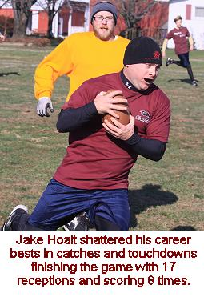 They struck quickly again as Truitt found Jake Hoalt for a
26 yard touchdown on the next play to put the Fossas back on top 56-49.(VIDEO)
After a first down completion set
up a second and short situation, the Capybaras shot themselves in the foot
once again. A third down pass to Chris Cork was dropped, and the fourth
down pass intended for Patrick Cork was just off his fingertips and the
Fossas took over inside midfield with 2 minutes to go in the half. Truitt
found Wilson for a short score with one minute left in the half and the
Fossas had the first two-score lead of the game at 63-49. With one minute
left in the half, the Capybaras still had a chance to stay in the game as
they would get the ball to start the second half. Again, they put themselves
in a difficult situation completing just one of their first three passes
and found themselves with a 4th and 12 with 20 seconds left. Henney was
able to hit Howard over the middle for a first down and the Capybaras used
a timeout to stop the clock with 10 seconds left. On a beautifully designed
crossing route, Henney had Chris Cork wide open in the endzone, but Cork
was unable to haul in the pass for another costly drop with just two seconds
left and a deperation heave to Howard on the next play fell incomplete and
the Capybaras were unable to put points on the board to close the half and
trailed 63-49 at the half.
"We absolutely had to have a
score on that final drive," said Henney. "If we score there, we
have a chance to tie the game up to start the third quarter and we are right
back in the game. "Our defense really stepped up late in the half,"
said Willy Truitt. "We used some no-huddle on offense and I thought
it really took a lot out of them on the offensive side of the ball."
The Capybaras were shut out over the final 12 1/2 minutes of the second
quarter and only managed to score 21 points in the quarter. After starting
the quarter 8-for-13, Henney completed just 4 of his final 16 passes (including
four drops) as the Capybaras offense seemed to hit the 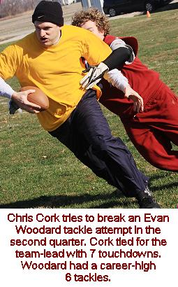 wall. "We had bad passes, dropped passes and the Fossas
had too much speed," stated Henney. "We were struggling mightily
to slow them down and our receivers couldn't get any separation from their
defenders at all." The Fossas' defensive game plan worked to perfection
in the second quarter. With Robert Trimble blanketing Patrick Cork, the
Fossas put Jake Hoalt on Greg Howard near the line of scrimmage and had
Willy Truitt shadowing Howard on every play. "Every time I got away
from Jake, Willy was right there," said a frustrated Howard. "I
haven't dealt with a lot of double coverage in my career, and they worked
it as well as they possibly could have."
Truitt continued his torrid pace completing
17-of-23 in the quarter with 5 touchdowns and an interception. Trimble and
Wilson both had 5 catches and a pair of touchdowns in the quarter. For the
half, Truitt was 22-for-35 with 9 touchdowns. Wilson led the team with 9
catches and 4 touchdowns, while Trimble had 8 catches and 3 scores. Jake
Hoalt had a relatively quiet half with 5 catches and two scores, but he
had a big second half coming. All 22 of Truitt's completions came to three
receivers as Evan Woodard 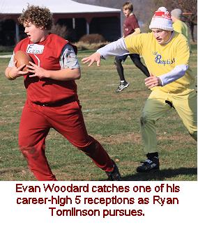 and Luke Yochum did not haul in a pass in the first half.
Henney completed just 12-of-29 passes
in the second quarter for 3 scores. Chris Cork had 4 catches and 2 scores
in the quarter and Greg Howard had 3 receptions and one score. Henney was
21-for-47 in the first half, but he was hampered by 7 dropped passes from
his receivers in the half. Several of the drops were at crucial times, including
a couple in the final few minutes as the Capybaras were trying to keep pace.
Patrick Cork led the Capybaras in the first half with 7 catches, but failed
to find the endzone. Greg Howard had 6 catches and 4 touchdowns and Chris
Cork had 5 catches and scored 3 times. Kevin Ryan had 2 catches and Ryan
Tomlinson 1 in the first half of play.
The Capybaras started the second half
with the ball in must-score mode and Henney found Ryan Tomlinson for his
first touchdown of the game to cut the lead to 63-56. The Fossas were faced
with a 4th and 5 on the ensuing possession, but the Capybaras were unable
to get the big stop as Truitt found Jake Hoalt for the second of his three
4th down receptions for the first down and then hit Wilson in the endzone
on the next play from 10 yards out to move the lead back to two scores at
70-56. Henney answered quickly with back-to-back completions to Howard to
make it 70-63 (VIDEO),
but 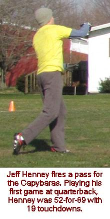
Jake Hoalt answered with a short score of his own to make it 77-63. After
a dropped pass to start the next drive, Henney completed five straight passes
including a 5 yard scoring strike to Chris Cork to make it 77-70. After
an inconsistent second quarter, Henney came out on fire in the third completing
9 of his first 10 passes with the only incompletion coming on a dropped
pass. Hoalt scored from 8 yards out on the next Fossas possession and Howard
scored again from 18 yards out on a nice leaping grab to make the score
84-77 (VIDEO),
but Hoalt scored for the third consecutive time to push it back to 91-77.
Two more dropped passes by the Capybaras set up another third and long situation,
but Henney hit Chris Cork on back-to-back passes for gains of 24 and 14
(91-84), but Wilson added another short score from Truitt to make it 98-84
with time running down in the third quarter. Chris Cork scored his third
touchdown of the quarter on the next drive and Hoalt followed with his fourth
score of the frame on yet another fourth down play to end the quarter with
the Fossas leading 105-91.
Both teams came out firing after the
halftime break as both teams put up 42 points in the third quarter. Henney
was locked in to his receivers needing just 15 completions on 19 attempts
to score 6 touchdowns. Henney easily could have had a perfect quarter as
all four incomplete passes in the quarter came on dropped passes. Patrick
Cork led a balanced third quarter attack with 5 catches for the Capybaras.
Chris Cork had 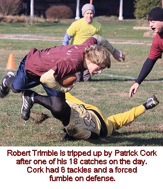 4 receptions and 3 touchdowns, Howard had 3 catches and a
pair of touchdowns and Ryan Tomlinson had 2 grabs and scored once. Truitt
was nearly as effective as Henney completing 20-of-27 passes for 6 scores.
Like Henney, four of Truitt's seven incompletions in the quarter were on
dropped passes. Trimble had a big quarter for the Fossas with 7 catches,
but did not find the endzone on any of them. Jake Hoalt started what would
be a big second half with 6 catches and 4 scores. Wilson had 4 catches and
2 touchdowns and Evan Woodard had his first two catches of the game.
"We knew we had to score a lot
of points in the quarter to keep pace," said 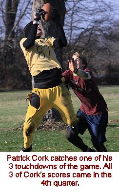 receiver Patrick Cork. "But we also knew we had to get
a stop at some point and we never could. It never seemed like they were
in trouble on offense, even when we had them in 4th down situations. Willy
was locked in with his big three receivers (Wilson, Trimble and Hoalt) and
we couldn't do anything about it."
Kevin Ryan started things off quickly
for the Capybaras in the fourth quarter with a length-of-the-field catch
and run touchdown to cut the lead to one score again (105-98) (VIDEO),
but Truitt needed just two plays to answer as Jake Hoalt scored his fifth
touchdown in the past six drives to move the lead to 112-98. The Capybaras
moved to ball across midfield, but Henney made one of his only mistakes
of the game as he tried to force a ball to Greg Howard in the corner of
the endzone on first down and Willy Truitt made a great jump on the ball
and was able to deflect it and intercept it in the endzone for a back-breaking
turnover.(VIDEO)
"I just can't make that throw, especially on first down," reflected
Henney. "But you have to give Willy credit - Greg was open for a second
but he closed awfully quick and made a great play."
"As the game went on I was taking
more chances, hopping more routes," said Willy Truitt. "Reg has
told me that when you are playing safety, there's a point in every play
that you have to make a choice. If I wasn't helping Jake with Greg, then
I'd slide over and hop onto another receiver's route. It seemed to work
late, as I was able to break up 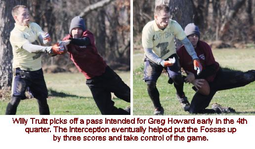 some passes to Tomlinson, Kevin Ryan, and then ultimately,
the pick on a pass to Howard. I was pumped after that. It felt like we had
won."
With a two-touchdown lead and the
ball, the Fossas looked for the knockout blow and Truitt found Wilson for
a touchdown on the third play of the next drive to give the Fossas the first
three-score lead of the game at 119-98 with 19 minutes remaining. In desperate
need for quick points, the Capybaras finally hit a deep pass as Henney completed
a bomb on first down to Patrick Cork for a touchdown. (VIDEO)Although
it was Cork's 14th catch of the game it was just his first score. The Capybaras
were looking for some momentum and they got it on the next play as Jake
Hoalt took a short pass and tried to break it for a score, but Greg Howard
was able to get his hand on the ball enough to knock it loose and Kevin
Ryan pounced on the fumble and the Capybaras finally had the big turnover
they needed. "We were slapping at the ball every time they caught a
pass," said Howard. "All it takes is one person to put the ball
on the 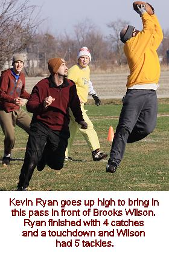
ground to turn things around."
Henney hit Patrick Cork again on the
second play of the drive and suddenly the lead was down to one score again
at 119-112 with 16 minutes to go. Truitt found Wilson in the endzone for
a score to make it 126-112, but Henney found a diving Patrick Cork in the
back of the endzone for his third consecutive touchdown of the quarter to
make it 126-119. The Capybaras had what would be their final chance to tie
the game on the first play of the next possession. Willy Truitt tried to
force a pass to Trimble over the middle that was nearly intercepted, but
Henney couldn't quite haul in the pass and the Fossas capitalized as Truitt
completed three straight passes including a nice one-handed grab in the
endzone by Wilson to put the Fossas up 133-119.(VIDEO) The Capybaras found themselves with a difficult
4th-and-10 on the following drive, and Henney's pass for Kevin Ryan was
knocked away by safety Willy Truitt for yet another fourth down stop for
the Fossas defense and another huge defensive play from Truitt. Two plays
later Truitt hit Wilson for the fourth time in the quarter for a touchdown
to push the lead back to three scores at 140-119 with 7 minutes to go.
Chris Cork scored from 26 yards out
to cut the lead to 140-126 (VIDEO),
but the Capybaras were running out of time. With just four minutes to go,
Truitt hit Wilson down the sideline for what looked like it could be a long
score, but Patrick Cork dove at Wilson's legs and as Wilson tried to spin
off the tackle to reach the goal line he lost the ball and Chris Cork fell
on the fumble in the endzone (VIDEO)
and the Capybaras were still alive...barely. Henney worked quickly as he
completed all three passes including a 12-yard score to Howard and once
again the lead was cut to one score at 140-133 with three minutes left to
play. But as he had been all day, Truitt was cool under pressure and hit
on three straight passes of his own including a 16 yard score to Evan Woodard
to make it 147-133. 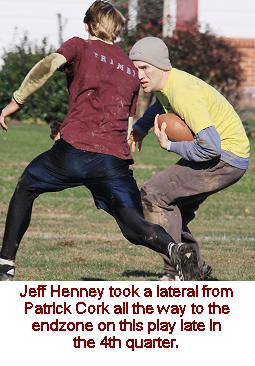 The Capybaras scrambled to the line and Henney dumped a short
pass to Patrick Cork in what turned out to be the wildest play of the game.
Cork was wrapped up immediately by Robert Trimble, but was able to move
the ball to his left hand and throw a bouncing lateral back to Henney who
scampered through the Fossas defense, breaking tackles from all five Fossas
defenders for a wild 38 yard touchdown score to cut the lead to 147-140
with just two minutes left. (VIDEO)
"At that point in the game, you have to get yards no matter how you
can," said Patrick. "All I was hoping for was for Jeff to get
a few more yards and get us closer to the endzone, but he made an amazing
play to get us a score and give us one more chance to get a stop."
Once again, Truitt found open receivers
on the first two plays for his 11th consecutive completion, and then found
Jake Hoalt for the game-clinching score with just 10 seconds left. With
the game out of reach at 154-140, the Capybaras made a quarterback change
and put Ryan Tomlinson under center for the first time in his career. Tomlinson's
first pass, intended for Patrick Cork, was batted away by a defender with
two seconds left, and on the final play of the game, Evan Woodard illegally
blitzed Tomlison who actually shook off Woodard and fired a strike to Howard
for a 15 yard catch to end the game. "He had told me he had been throwing
the football around with students during recess while he had been subbing,"
said Patrick Cork. "So I thought we'd give it a try. And I'll tell
you what, Ryan Tomlinson throws a nice ball."
After a high scoring third quarter,
the fourth quarter was even more high-powered as both teams scored 49 points
in the final frame. The Capybaras were intercepted on one drive and stopped
on downs for another. Amazingly, the Fossas should have scored 9 times in
the quarter as their only two possessions that didn't result in points ended
in fumbles deep in Capybara territory on plays that nearly resulted in touchdowns.
Truitt had a legendary final quarter for the Fossas as he completed 20-of-24
passes, including 11 straight at one point, for 7 touchdowns. Brooks Wilson
was the recipient of 9 of Truitt's 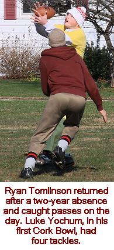 completions and 4 of the touchdown passes. Jake Hoalt capped
off a great second half with 6 catches and 2 scores. Robert Trimble had
three grabs in the final quarter and Evan Woodard had 2 catches and a touchdown.
Henney was very effective as well hitting on 16-of-23 for 6 touchdowns,
but had the one interception. Patrick Cork led the way for the Capybaras
with 7 catches and 3 scores in the quarter, while Greg Howard had 4 catches
and a touchdown. Chris Cork had 3 catches and a score, Kevin Ryan had a
catch for a touchdown and Tomlinson had a pair of catches.
Both teams had phenomenal second halves
as the Fossas scored on 13 of their 15 possessions as Willy Truitt completed
40-of-51 passes for 13 touchdowns. "Anytime you can complete nearly
80% of your passes, you're going to score a lot of points," observed
teammate Robert Trimble. Five of Truitt's 11 incompletions were on dropped
passes. Wilson hauled in 13 passes in the second half, including six touchdowns.
Hoalt had 12 catches and scored six times in the second half as well. Trimble
had 10 catches in the half with no scores and Woodard had all five of his
catches and his only touchdown in the second half.
Henney was impressive in the half
as well completing 31-of-42 for 12 touchdowns. Patrick Cork led the Capybaras
with 12 catches in the half with 3 touchdowns. Chris Cork and Greg Howard
each had 7 catches with Cork scoring 4 times and Howard thee times. Ryan
Tomlinson had 4 catches and a score while Kevin Ryan had a pair of catches
and a touchdown in the half.
The Cork Bowl 19 MVP award was shared
between Brooks Wilson and Willy Truitt. It was Wilson's first ever MVP award,
and Truitt's second - with the other one also being a Co-MVP in Cork Bowl
10. Truitt set a new career best by completing 62 passes on 86 attempts.
The 72% completion percentage was a single-game record, just edging Tony
Cork's 71% completion percentage in Cork Bowl 14. Truitt also tied Cork's
single-game touchdown mark of 22. "I didn't feel like it was my best
day at QB," said Truitt. "I put up a stupid pass on a first and
goal that was picked by Henney. That wasn't a veteran move. I'm glad it
didn't cost us. I'm surprised that many points were posted by both teams.
The game flow sure didn't feel that quick, and there weren't 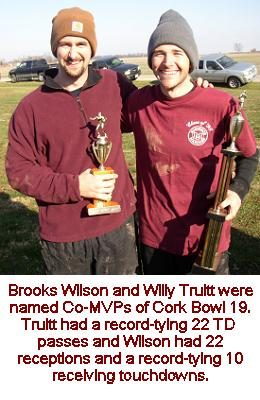 a lot of deep balls. Our offense
seemed to operate better in a hurry up mode, so that may have contributed."
Although Truitt's offensive numbers drew much of the attention, it was his
defense that swayed some extra MVP votes his way. He had two big pass breakups
on fourth down plays and also had the game-changing interception early in
the 4th quarter. He was also integral in the double coverage scheme the
Fossas ran on Greg Howard. "His defense was the reason he got my vote,"
commented statistician Mike Miller. "Every time the Fossas made a play
on defense it seemed like Willy was a part of it." As for Wilson, he
had a career day as well setting a new personal record in receptions with
22. He tied the single-game touchdown mark of 10 set by Greg Howard. Wilson's
huge second half (13 catches and 6 touchdowns) helped put the game away.
"I didn't think I had that many catches," recalled Wilson. "Our
offense was moving the ball so well and everybody seemed very involved.
I'm just glad to get a W in the book next to my name. The individual honor
is just icing on the cake."
As mentioned, Willy Truitt completed
62-of-86 passes (72%) for 22 touchdowns and one interception. Wilson led
all receivers with 22 catches and 10 touchdowns. Robert Trimble and Jake
Hoalt joined Wilson as Truitt's go-to receivers with Trimble ending with
a career-high 18 receptions with 3 touchdowns and Hoalt finishing with 17
catches and 8 touchdowns. It was a huge breakout game for Hoalt who had
been known mainly as a solid defensive player and tackler in his career.
His previous career high in catches was 7 and he only had 7 touchdowns in
his career prior to the game. "Jake was the difference maker without
a doubt," said Truitt. "I knew I could count on Brooks and Trimble
to have big days, but for Jake to put up those kinds of numbers was huge.
He established himself as one of the game's top players today." Evan
Woodard also had a career-best 5 receptions in the game and scored a touchdown.
Rookie Luke Yochum did not record a catch, but was used sparingly on offense.
Amazingly, all four receivers for the Fossas set career-highs in receptions
in the game. "That's a difference maker stat if you ask me," said
Capybara receiver Patrick Cork. "Every single receiver on their team
stepped up huge. To win a Cork Bowl you have to have one or two guys go
above and beyond what you would expect, but all four of their guys did."
As for the Capybaras, Jeff Henney
had a very solid debut under center completing 52-of-89 passes for 19 touchdowns
and one interception. Patrick Cork led the way offensively for the Capybaras
with 19 catches and scored 3 touchdowns. Greg Howard hauled in 13 passes
for 7 touchdowns 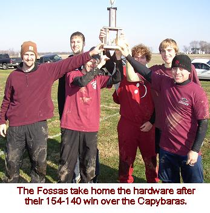 and Chris Cork added 12 receptions and 7 scores as well. Ryan
Tomlinson, in his first game since Cork Bowl 16, had 5 receptions and a
score while Kevin Ryan caught 4 passes and scored once. "On paper it
looks like our offense was a lot better than it was," added Henney.
"We really struggled to move the ball at certain times in the game,
especially in the second quarter. Their defenders were too fast and covered
too much ground. We were never really in a rhythm and couldn't execute our
game plan the way we wanted to."
Defensively, Robert Trimble led all
players with 12 tackles. Jake Hoalt and Evan Woodard each had 6 tackles,
Brooks Wilson had 5, Luke Yochum 4 and Willy Truitt had 2 tackles and an
interception. Greg Howard led the Capybaras with 11 tackles, and moved into
#1 on the all-time tackle list by passing newly retired Reggie Truitt. He
also had a forced fumble. Jeff Henney had 10 tackles and an interception
while Chris Cork totaled 7 tackles and a fumble recovery. Patrick Cork had
6 tackles and a forced fumble, Ryan Tomlinson had 3 tackles and Kevin Ryan
had 2 tackles and a fumble recovery. Although all 12 players finished the
game, several players were left battered. Along with the regular bumps and
bruises, Jeff Henney had a severely swollen cheek and black eye from an
inadvertent elbow from Robert Trimble and Luke Yochum suffered a fractured
thumb making a tackle on Patrick Cork on the second drive of the game. Yochum,
however, didn't miss any time with the injured thumb.
Execution was the name of the game
as the Fossas capitalized time and again both offensively and defensively.
The Fossas were faced with just 5 fourth downs the entire game and converted
on 4 of them (3 of them by Jake Hoalt) with the only failed 4th down play
coming on the first drive of the game. The Capybaras, on the other hand,
converted just 4 of 8 fourth down plays, and also wasted a scoring opportunity
on the last drive of the first half. Even when they were able to get free
from the defense, they couldn't hang on to the ball as they tallied 11 dropped
passes in the game. "It wasn't just one person," added Patrick
Cork. "I dropped one and had another one that I could have caught,
Chris dropped a few, and Greg, Kevin and Tomlinson all dropped a couple
as well. Everybody on our team made mistakes at some point during the game.
There was no finger-pointing in the locker room because we all knew we were
partly to blame."
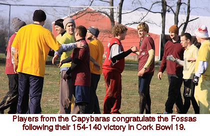 The
Fossas fourth quarter, in particular, was amazingly efficient. Willy Truitt
completed 20-of-24 passes and the Fossas only had 2 third down plays the
entire quarter. "It was completion-completion-touchdown every single
drive," recalled Willy Truitt. "We had worn them down with the
no-huddle throughout the game and were picking them apart in those final
25 minutes." If not for the two fumbles by Wilson and Hoalt, the Fossas
likely would have scored 63 points. "Totally uncharacteristic for those
two guys," added Truitt. "They kept coming into the huddle and
apologizing, and I felt bad for them. I told them to forget it, we were
still winning and they can't stop us. Just keep doing what we're doing,
we're fine. That is what I was preaching. I had to stay upbeat because I
know of the fight that Jeff and Patrick have in them. If we showed weakness,
then it could have gotten ugly."
In only the fifth game for which yardage
statistics were kept, the Fossas tallied the most total yards in history
with 875 in the game. The Capybaras had the second-most yards ever with
839 total yards. The previous high was 830 yards in Cork Bowl 17. The fourth
quarter was gigantic for both teams with both teams gaining more than 1/3
of their total yards in the quarter. Amazingly, both teams gained the same
number of yards in the quarter (309) for a total of 618 in the quarter.
Brooks Wilson had the most yards in recorded history with 308 (prior record
was 303) and Patrick Cork also went over 300 yards with 301 yards. "I
wish we had total yards from all the games because it would be interesting
to see how many yards we gained back in the early days," said Willy
Truitt. 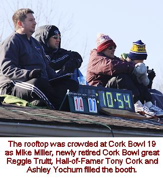
The size advantage the Capybaras had
over the Fossas was not much of a factor. "We thought we could get
some one-on-one plays to Patrick or Chris but it really didn't happen,"
stated Capybaras head coach Brian Garrard. However, the speed factor for
the Fossas was a huge advantage. "We had no answer on defense,"
added Garrard. "We were hoping that having Greg at safety would allow
him to run around and make plays, but all it did was take away one of our
fastest defenders. Looking back, we needed to move him onto Jake or Wilson
and put Patrick on the other one. I think we could have at least slowed
them down with Patrick, Henney and Greg guarding their big 3, but we never
adjusted. I tried to get some calls in to change the plays on defense, but
the Fossas were using so much no-huddle that we could never get adjusted.
Jake and Wilson had 15 of their 20 catches in the fourth quarter - that
just can't happen without an adjustment being made. I can't imagine the
kind of trouble we would have been in if they had Williamson. We had enough
trouble keeping pace the way it was. It might have been really ugly had
he been able to make it. I'm so proud of the heart our team showed though.
There was a time in the second quarter when we were really struggling to
score and you could tell we were overmatched. But even after we fell down
by three scores in the fourth quarter we never gave up. It would have been
easy to mail in the final 15 minutes and go home, but our guys didn't do
that, and it nearly got us back even. I'm proud of the character our team
showed late in the game to never give up."
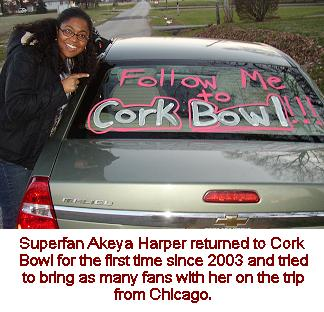 The
Fossas' defensive game plan worked exceptionally well. They put the bigger,
faster Trimble on Patrick Cork and then used Jake Hoalt and Willy Truitt
to double-team Howard on most plays. That left Wilson on Chris Cork or Kevin
Ryan and Yochum and Woodard on Tomlinson. "I thought for sure they'd
put Trimble on Greg," said Henney. "I didn't think anyone else
on their team could keep up with Greg, but by double-teaming him, they kept
him in check most of the game. And nobody else on our team has the speed
to take advantage of the empty space deep in the middle. We were forced
to use check-down passes, and we dropped too many of them to make it work.
The Fossas played the best cover D I have seen in my six years in the game.
Every defender they had was faster than our receiver. It took all we had
to move the ball on them, while they never seemed to have any problems getting
scores."
Questions abound once again regarding
the future of Cork Bowl. With next year marking the 20th anniversary game,
some wonder if next year will be the year the league calls it quits. "Any
talk of Cork Bowl ending is premature," emphasized Commissioner Patrick
Cork. "We have a lot of blanks to fill in, but we have no plans on
ending the game yet." One blank that will need to be filled in is Jeff
Henney. Henney likely played his final Cork Bowl as he plans to move overseas
later this winter. As has been the case for the past 10 years, rumors continue
to swirl regarding the future of Chris Cork. Kevin Ryan has also hinted
at hanging up the cleats in recent years. "When you look up at Reggie
sitting on the roof with a warm coat on and a drink in his hand, it really
makes you think about your future," stated Ryan. "I don't think
I'm ready yet, but I'll some thinking to do this winter."
Cork Bowl 19 Game Notes:
Greg Howard moved past Reggie Truitt
for first on the all-time tackles list with his 11 tackles giving him 129
for his career....Robert Trimble moved into 10th on the all-time receptions
list with his 18 catches giving him 62 in his career....Patrick Cork's 3
touchdowns give him 80 for his career....Brooks Wilson's big 22-catch day
moved him past Greg Howard into 3rd on the all-time receptions list with
136....Kevin Ryan passed the 100 catch mark in the game - his four catches
give 102 for his career....Jeff Henney ranks sixth on the all-time passing
list after his 52 completions and 19 touchdowns....Jake Hoalt's 8 touchdowns
move him into a tie for 11th in all-time touchdown receptions with 15....Willy
Truitt's interception on defense moved him into 4th on the all-time interception
rankings with 9....Chris Cork and Greg Howard remain tied for second in
career touchdowns with 64 - it was Cork's third career game with 7 touchdown
receptions....Robert Trimble has recorded at least 10 tackles in five of
his past six games....
RUMBLINGS FROM THE ROOF - OBSERVATIONS
FROM THE CORK BOWL 19 PRESS CORPS
From Tony Cork: "Jake Hoalt was
the difference in my opinion. He showed some really good speed and seemed
to be in excellent shape. The Capybaras couldn't slow him down at all in
the second half and Willy showed more and more confidence in him as the
game went along. You knew Robert and Greg would be in good shape, but the
rest of the field was far from fit. It looked like poetry in motion - really
slow motion. There were a lot of guys that were gassed early. I thought
Henney played very well for his first time at quarterback. It was so hard
for them to get first downs because the Fossas were so much faster, but
he hung in there and made some really great throws into tight coverage.
It's impressive that he only had one interception considering how close
the defenders were on his receivers all game. The speed of the Fossas was
too much for the Capybaras - it was like night and day. I was very impressed
with how well Wilson held up. He's added a few pounds over the years, but
he was still moving pretty well in the fourth quarter, especially when you
compared him to Chris. Those two are the same age, but it's pretty obvious
that Wilson has a lot more tread left on his tires than Chris does. It was
bittersweet to see Willy Truitt break my completion percentage record and
tie my touchdown mark. He was really good all game though, but I don't remember
throwing that many short passes when I was playing....and I'll be anxious
to see if he can put up those same numbers when he's 59 years old." |
(Click Here for More Pictures!)
For
all pictures from the game visit Cork Bowl 19's Picasa/Google Image Center
Back to top
Cork Bowl 19 Stats
Back to Cork Bowl |